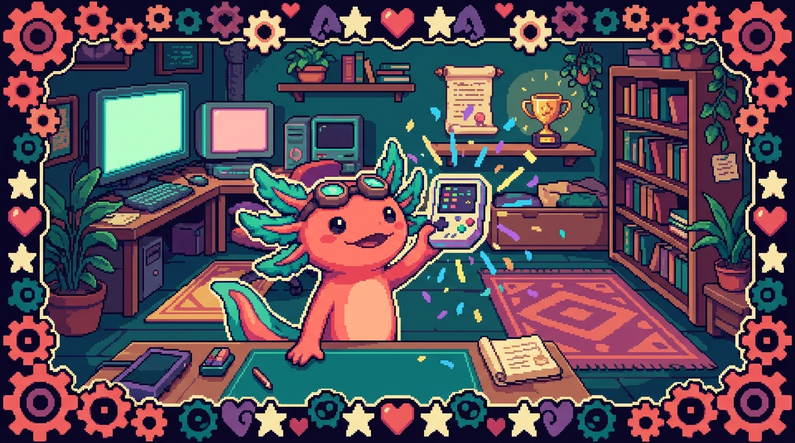

Capítulo 14 — Mini-proyecto guiado

En este capítulo vas a juntar todo lo que aprendiste en el Módulo 00 y construir, con tus propias manos, un proyecto pequeño pero completo y real: una carpeta organizada, un archivo de notas, un repositorio de Git con su historial de cambios, y un script muy simple que el computador ejecutará y te responderá. No es un ejercicio de mentira: cuando termines, tendrás en tu disco un proyecto con la misma estructura básica que usan proyectos de verdad como tunal-digital o PolyPaw. Importa porque dejas de leer sobre programar y empiezas a programar. Bit, tu ajolote guía, te acompaña paso a paso. Respira: todo lo que sigue se hace despacio y sin prisa.
1. Qué vamos a construir (el plan antes que el teclado)
Antes de tocar el teclado, conviene saber a dónde vamos. Un buen programador piensa primero y escribe después. Vamos a construir un mini-proyecto llamado mi-diario-de-codigo: una pequeña libreta digital donde anotarás tu avance aprendiendo a programar, con control de versiones (para no perder nada) y un programita que cuente cuántas notas llevas.
El proyecto terminado se verá así:
mi-diario-de-codigo/
├── README.md (qué es este proyecto)
├── notas.md (tus anotaciones de aprendizaje)
└── contar.js (un script que cuenta tus notas)
Tres archivos. Nada más. Pero con esos tres archivos vas a practicar: crear carpetas, escribir archivos de texto, usar la terminal, inicializar Git, hacer commits y ejecutar un programa. Eso es muchísimo para un primer proyecto.
🟦 ¿Qué significa? — Mini-proyecto
Un proyecto es un conjunto de archivos que trabajan juntos para lograr un objetivo. "Mini" solo quiere decir que es pequeño y abarcable en una sesión. Sirve para practicar el ciclo completo (crear, escribir, guardar, versionar, ejecutar) sin abrumarte. Tus proyectos reales como RachaSimple (una app de hábitos) son el mismo concepto, solo que con cientos de archivos en lugar de tres.
💡 Tip — Lee el capítulo entero una vez antes de empezar
Date una pasada de lectura sin teclear. Así tu cabeza tendrá el mapa completo, y cuando vuelvas al inicio para hacerlo "en serio", cada paso tendrá sentido. Bit insiste: el pánico nace de no saber qué viene después.
2. Abrir la terminal y ubicarte 💻
Todo empieza en la terminal, esa ventana de texto donde le hablas al computador escribiendo. Ábrela (en Windows puede ser PowerShell o Git Bash; en Mac o Linux, Terminal).
🟦 ¿Qué significa? — Terminal
La terminal es un programa donde escribes órdenes en texto y el computador las ejecuta, en lugar de hacer clic con el ratón. Cada línea que escribes y confirmas con Enter es un comando. Sirve para trabajar rápido y para tareas que no tienen botones. Tu servidor polypaw-nas (un Acer con Ubuntu Server) se administra casi por completo desde la terminal, porque ni siquiera tiene pantalla con ventanas: solo texto.
Lo primero es saber dónde estás parado. La terminal siempre está "dentro" de una carpeta, llamada carpeta actual o directorio de trabajo. Para verla:
pwd
🟦 ¿Qué significa? — pwd
Significa print working directory (imprimir directorio de trabajo). Te muestra la ruta de la carpeta donde estás ahora mismo. Sirve para no perderte: antes de crear cosas, conviene saber dónde caerán.
El resultado será algo como /home/tu-usuario o /Users/tu-nombre o C:\Users\tu-nombre. Esa es tu carpeta personal, un buen lugar para trabajar. Si quieres, muévete a tu carpeta de Documentos o Escritorio; lo importante es que recuerdes dónde quedó el proyecto.
⚠️ Cuidado — No crees el proyecto "en cualquier parte"
Es muy fácil crear la carpeta, cerrar la terminal y luego no encontrarla nunca más. Anota mentalmente (o en un papel) la ruta que te dio
pwd. Ahí va a vivir tu proyecto.
3. Crear la carpeta del proyecto 💻
Ahora creamos la carpeta. El comando se llama mkdir.
mkdir mi-diario-de-codigo
🟦 ¿Qué significa? — mkdir
Significa make directory (crear directorio). Crea una carpeta nueva con el nombre que le des. "Directorio" y "carpeta" son la misma cosa: la palabra "directorio" es la versión técnica. Lo usas para organizar tus archivos en grupos.
No verás nada en pantalla: en la terminal, silencio suele ser señal de éxito. Si algo sale mal, te avisará con un mensaje de error. Ahora entra en la carpeta recién creada:
cd mi-diario-de-codigo
🟦 ¿Qué significa? — cd
Significa change directory (cambiar de directorio). Te mueve "dentro" de una carpeta, como hacer doble clic para entrar en ella. A partir de ahí, todo lo que crees caerá dentro. Para salir y volver atrás un nivel se usa
cd ..(los dos puntos significan "la carpeta de arriba").
Confirma con pwd que ahora estás dentro de mi-diario-de-codigo. Debería aparecer el nombre de la carpeta al final de la ruta. ¡Estás dentro de tu proyecto!
💡 Tip — Nombres de carpetas sin espacios ni tildes
Fíjate que el proyecto se llama
mi-diario-de-codigo, con guiones y sin tildes ni espacios. En programación esto evita dolores de cabeza: los espacios obligan a poner comillas, y las tildes a veces confunden a las herramientas. Es la misma razón por la que tus proyectos reales se llamantunal-digitalopolypaw-nasy no "Tunal Digital" con espacio.
4. Crear el primer archivo: README.md 💻
Todo proyecto serio empieza con un README: un archivo que explica qué es el proyecto. La gente lo lee primero (de ahí su nombre, "léeme" en inglés).
🟦 ¿Qué significa? — README
Es un archivo de texto, casi siempre llamado
README.md, que describe de qué trata el proyecto, cómo usarlo y qué necesita. Sirve para que cualquiera (incluido tú dentro de seis meses) entienda el proyecto sin leer todo el código. La regla del proyecto Faro (la carpeta Organizer) es tan estricta con esto que obliga a actualizar el README en cada cambio importante.🟦 ¿Qué significa? — Markdown (la
.md)Markdown es una forma sencilla de dar formato a un texto usando símbolos:
#para títulos,-para listas,**texto**para negrita. La extensión.mdindica que el archivo está en Markdown. Sirve para escribir documentos legibles tanto en crudo como ya "bonitos". Este mismo manual que lees está escrito en Markdown.
Vamos a crear el archivo y abrirlo en tu editor de código (por ejemplo VS Code). Si tienes VS Code instalado con el comando code, escribe:
code README.md
Si eso no funciona, no pasa nada: abre tu editor de texto a mano, y guarda un archivo nuevo llamado README.md dentro de la carpeta mi-diario-de-codigo. Dentro del archivo, escribe esto:
# Mi diario de código
Este es mi primer proyecto mientras aprendo a programar.
Aquí anoto lo que voy aprendiendo, día por día.
## Qué contiene
- `notas.md`: mis anotaciones de aprendizaje.
- `contar.js`: un script que cuenta cuántas notas llevo.
Guarda el archivo (en VS Code, Ctrl+S o Cmd+S). ¡Felicidades, escribiste tu primera documentación!
🔎 En tu código
En tunal-digital, el sitio web vive en archivos como
sitio-web/index.html,styles.cssymain.js. Cada uno tiene un propósito claro, igual que tus tres archivos aquí. La idea de "un archivo, una responsabilidad" es la misma sin importar el tamaño del proyecto.
5. Crear el archivo de notas 💻
Ahora el corazón del diario: notas.md. Créalo igual que antes (code notas.md o a mano) y escribe algo así:
# Mis notas de aprendizaje
- Aprendí qué es la terminal y cómo moverme con cd y pwd.
- Creé mi primera carpeta con mkdir.
- Entendí que README.md explica el proyecto.
Cada línea que empieza con - es un elemento de lista. Vamos a aprovechar ese detalle: nuestro futuro script contará cuántas líneas empiezan con - para saber cuántas notas tienes. Por ahora, guarda el archivo.
💡 Tip — Escribe notas de verdad
No copies mis líneas tal cual: escribe tus propias notas, con tus palabras y tus dudas. Un diario de aprendizaje solo sirve si es honesto. "Hoy no entendí qué es un commit" es una nota valiosísima.
6. Inicializar Git 💻
Aquí entra una de las herramientas más importantes de tu vida como programador: Git. Hasta ahora tienes archivos sueltos; Git les va a dar memoria.
🟦 ¿Qué significa? — Git
Git es un sistema de control de versiones: un programa que guarda fotos del estado de tu proyecto a lo largo del tiempo. Sirve para no perder trabajo, poder volver atrás si rompes algo, y ver qué cambió y cuándo. Todos tus proyectos serios (Faro, RachaSimple, tunal-digital) viven en Git.
🟦 ¿Qué significa? — Repositorio
Un repositorio (o "repo") es una carpeta que Git está vigilando. Por dentro, Git guarda ahí todo el historial de cambios en una subcarpeta oculta llamada
.git. Sirve para tener un proyecto entero, con su pasado completo, dentro de una sola carpeta.
Asegúrate de estar dentro de mi-diario-de-codigo (usa pwd si dudas) y escribe:
git init
Verás un mensaje como "Initialized empty Git repository". ¡Acabas de convertir tu carpeta en un repositorio! No cambió nada visible, pero ahora Git observa todo lo que pase aquí.
⚠️ Cuidado —
git initse hace UNA sola vez por proyectoNo necesitas repetir
git initcada vez que trabajas. Solo se hace al nacer el proyecto. Si lo ejecutas dos veces no rompes nada grave, pero es señal de que perdiste el hilo de dónde estás.
Ahora pregúntale a Git cómo ve tu proyecto:
git status
🟦 ¿Qué significa? — git status
Muestra el estado actual del repositorio: qué archivos son nuevos, cuáles cambiaron y cuáles ya están guardados. Sirve para orientarte antes de guardar. Es el comando que más vas a usar en tu vida; cuando dudes,
git status.
Git te dirá que README.md y notas.md son archivos "untracked" (sin seguimiento): los ve, pero todavía no los está guardando en su historial. Eso lo arreglamos ahora.
7. Tu primer commit 💻
Guardar en Git tiene dos pasos: primero eliges qué archivos quieres guardar (git add), y luego confirmas el guardado con un mensaje (git commit). Es como preparar una caja (add) y luego sellarla con una etiqueta (commit).
🟦 ¿Qué significa? — git add
Marca uno o varios archivos para incluirlos en el próximo guardado. A esa zona de "listos para guardar" se le llama staging (área de preparación). Sirve para que tú decidas exactamente qué entra en cada foto, en vez de guardar todo a ciegas.
git add README.md notas.md
O, si quieres añadir todos los cambios de un golpe, el atajo es un punto, que significa "todo lo de esta carpeta":
git add .
Ahora sella la caja:
git commit -m "Primer commit: README y notas iniciales"
🟦 ¿Qué significa? — Commit
Un commit es una foto guardada del proyecto en un momento dado, con un mensaje que explica qué cambiaste. Sirve como punto de retorno: siempre puedes volver a cualquier commit anterior. La parte
-m(de message) le pone la etiqueta a esa foto. Cada vez que avances en Faro o PolyPaw, dejas un commit que cuenta esa historia.💡 Tip — Mensajes de commit que tu yo futuro agradecerá
Un buen mensaje dice qué hiciste, en pocas palabras y en presente: "Agrega archivo de notas", "Corrige conteo de líneas". Un mal mensaje es "cosas", "cambios", "asdf". El mensaje es para la persona que lea el historial mañana, y casi siempre esa persona eres tú.
Comprueba que funcionó viendo el historial:
git log --oneline
🟦 ¿Qué significa? — git log
Muestra la lista de commits que llevas, del más reciente al más antiguo. La opción
--onelinelos resume en una línea cada uno. Sirve para ver la historia de tu proyecto de un vistazo. Deberías ver tu commit con un código corto (comoa1b2c3d), que es su identificador único.
¡Felicidades, doble! Tienes tu primer commit. Tu proyecto ya tiene memoria.
8. El script: contar.js 💻
Llegó la parte de programar de verdad: un script que el computador ejecuta. Vamos a usar JavaScript, el mismo lenguaje que mueve a tunal-digital y RachaSimple. Lo correremos con Node.js.
🟦 ¿Qué significa? — Script
Un script es un archivo de texto con instrucciones que el computador ejecuta de arriba abajo. "Script" significa guion, como el de una obra de teatro: una lista de pasos a seguir. Sirve para automatizar tareas. El
backend/worker.jsde tunal-digital también es, en el fondo, un script (más grande) que corre cuando alguien visita el sitio.🟦 ¿Qué significa? — JavaScript (la
.js)JavaScript es un lenguaje de programación muy popular, que el computador entiende. Sirve para dar comportamiento: hacer cálculos, reaccionar a clics, leer archivos. La extensión
.jsindica que el archivo está escrito en JavaScript. Es el lenguaje de tres de tus proyectos.🟦 ¿Qué significa? — Node.js
Node.js es un programa que ejecuta JavaScript fuera del navegador, directo en tu computador. Sirve para correr scripts desde la terminal. Comprueba si lo tienes con
node --version: si te responde un número comov20.11.0, estás listo.
8.1 Primero, en pseudocódigo
Antes de escribir JavaScript real, pensemos el script en pseudocódigo: lenguaje humano con forma de programa.
🟦 ¿Qué significa? — Pseudocódigo
Es una descripción de un programa escrita en lenguaje cotidiano, sin reglas estrictas, para pensar la lógica antes de programarla. Sirve para razonar el "qué hago" sin pelear todavía con el "cómo se escribe". No lo ejecuta ninguna máquina: es solo para tu cabeza.
ABRIR el archivo notas.md
LEER todas sus líneas
CONTAR cuántas líneas empiezan con "- "
MOSTRAR en pantalla: "Llevas N notas. ¡Sigue así!"
¿Lo ves? Cuatro pasos claros. Ahora los traducimos a JavaScript real.
8.2 Ahora, en JavaScript real
Crea el archivo contar.js (code contar.js o a mano) y escribe esto exactamente:
// contar.js — cuenta cuántas notas tengo en notas.md
// 1. Traemos una herramienta de Node para leer archivos.
const fs = require("fs");
// 2. Leemos todo el contenido de notas.md como texto.
const contenido = fs.readFileSync("notas.md", "utf8");
// 3. Partimos el texto en líneas (cada salto de línea separa una).
const lineas = contenido.split("\n");
// 4. Contamos las líneas que empiezan con "- ".
let total = 0;
for (const linea of lineas) {
if (linea.startsWith("- ")) {
total = total + 1;
}
}
// 5. Mostramos el resultado en pantalla.
console.log("Llevas " + total + " notas. ¡Sigue así!");
No te asustes por la cantidad de símbolos. Vamos a entender las palabras nuevas una por una.
🟦 ¿Qué significa? — Comentario (
//)Todo lo que va después de
//en una línea es un comentario: texto que el computador ignora, escrito solo para que las personas entiendan el código. Sirve para explicarte a ti mismo qué hace cada parte. Úsalos sin miedo.🟦 ¿Qué significa? — Variable (
const,let)Una variable es una caja con nombre donde guardas un valor para usarlo después.
constcrea una caja cuyo valor no cambiará;letcrea una que sí podrá cambiar (por esototaleslet: irá creciendo). Sirven para no repetir datos y para recordar resultados intermedios.🟦 ¿Qué significa? — console.log
Es la orden de JavaScript para mostrar algo en pantalla (en la terminal). "Log" significa registrar o imprimir. Sirve para ver resultados y para revisar qué está pasando dentro de tu programa. Es la herramienta número uno para entender por qué algo no funciona.
🟦 ¿Qué significa? — Bucle (
for)Un bucle repite un bloque de instrucciones varias veces. Aquí,
for (const linea of lineas)significa "para cada línea de la lista de líneas, haz lo de adentro". Sirve para no escribir la misma orden cien veces: el computador la repite por ti.🟦 ¿Qué significa? — Condición (
if)
if(si) ejecuta un bloque solo cuando se cumple algo. Aquí: "si la línea empieza con-, suma uno". Sirve para que el programa tome decisiones. Es la base de toda lógica: hacer una cosa u otra según el caso.
Guarda el archivo.
🔎 En tu código
En PolyPaw, el archivo
main.pytambién empieza trayendo herramientas (en Python se usaimporten vez derequire) y luego lee datos desde archivos.json, igual que aquí leemosnotas.md. Cambia el lenguaje, pero la melodía es la misma: traer una herramienta, leer datos, procesarlos, mostrar un resultado.
9. Ejecutar el script 💻
Momento de la verdad. En la terminal, asegúrate de estar dentro de mi-diario-de-codigo y escribe:
node contar.js
Si todo está bien, verás algo como:
Llevas 3 notas. ¡Sigue así!
¡El computador acaba de leer tu archivo, contar tus notas y responderte! Eso es programar. Si abres notas.md, agregas una línea nueva que empiece con -, guardas, y vuelves a correr node contar.js, el número subirá. Pruébalo: esa pequeña magia de cambiar datos y ver el resultado actualizarse es la esencia de todo software.
⚠️ Cuidado — Si te sale un error, no es el fin del mundo
Errores comunes y su traducción: -
Cannot find module 'notas.md'oENOENT: no estás en la carpeta correcta, o el archivo se llama distinto. Revisa conpwdy comprueba el nombre exacto. -node: command not found: no tienes Node.js instalado, o la terminal no lo encuentra. Instálalo desde nodejs.org. -SyntaxError: escribiste algo distinto al ejemplo (una comilla, un paréntesis). Compara letra por letra. Bit te lo asegura: el 90% de los errores al inicio son una comilla o un paréntesis perdido.💡 Tip — Leer el error en voz alta
Cuando algo falle, no cierres los ojos: lee el mensaje de error con calma, incluso en voz alta. Casi siempre dice exactamente qué pasó y en qué línea. Aprender a leer errores es una superhabilidad; los programadores expertos no es que no se equivoquen, es que leen mejor sus errores.
10. Guardar el script en Git 💻
Tienes un archivo nuevo (contar.js) que Git todavía no conoce. Cerremos el ciclo con otro commit. Primero mira el estado:
git status
Verás contar.js como untracked. Añádelo y haz commit:
git add contar.js
git commit -m "Agrega script que cuenta las notas"
Y revisa tu historial completo:
git log --oneline
Ahora deberías ver dos commits. Tu proyecto tiene una historia con dos capítulos. Cada vez que avances, agregarás otro. Así, exactamente así, crecen proyectos enormes: un commit a la vez.
💡 Tip — El ritmo natural del trabajo
Fíjate en el patrón que acabas de vivir: cambio algo →
git status→git add→git commit -m "...". Ese ciclo lo repetirás miles de veces en tu carrera. No lo memorices a la fuerza; lo absorberás de tanto usarlo, como aprendiste a amarrarte los zapatos.
11. Repaso del proyecto completo
Detente y mira lo que construiste. Desde cero hiciste:
- Una carpeta de proyecto (
mkdir,cd). - Un README que explica el proyecto (Markdown).
- Un archivo de notas propio.
- Un repositorio Git con
git init. - Dos commits que cuentan la historia del proyecto.
- Un script en JavaScript que lee un archivo, cuenta y responde.
- La ejecución de ese script con Node.js.
Esa lista no es de juguete. Es, en miniatura, el mismo flujo con el que se construyó Faro (un organizador de proyectos en Next.js) o RachaSimple (una app de hábitos en React). La diferencia es de tamaño, no de naturaleza. Acabas de hacer, en pequeño, lo que hacen los programadores profesionales todos los días.
🔎 En tu código
Tu repositorio polypaw-nas maneja un servidor entero (Samba, Cockpit, Tailscale, AdGuard) y aun así, cuando se configura algo, alguien abre una terminal, edita un archivo de texto, lo prueba y guarda el cambio. El mismo ciclo de "editar → probar → guardar" que acabas de practicar aquí escala desde tres archivos hasta un servidor completo.
✅ Checklist — ¿ya domino esto?
- [ ] Sé abrir la terminal y averiguar en qué carpeta estoy con
pwd. - [ ] Puedo crear una carpeta con
mkdiry entrar en ella concd. - [ ] Entiendo qué es un README y para qué sirve Markdown.
- [ ] Sé inicializar un repositorio con
git init. - [ ] Entiendo la diferencia entre
git add(preparar) ygit commit(guardar). - [ ] Puedo ver el estado con
git statusy el historial congit log --oneline. - [ ] Sé escribir un script simple en JavaScript con un comentario, una variable, un
ify unfor. - [ ] Puedo ejecutar un script con
node archivo.jsy leer su resultado. - [ ] Si sale un error, lo leo con calma en vez de asustarme.
🧪 Ejercicios
-
Mensaje personalizado. 💻 Abre
contar.jsy cambia el texto final deconsole.logpara que diga algo tuyo, por ejemplo:"Voy por mi nota número " + total + ". ¡Bit está orgulloso!". Guarda, ejecuta connode contar.jsy haz un commit con un buen mensaje. -
Crece tu diario. 💻 Agrega tres notas nuevas (líneas que empiecen con
-) ennotas.md. Vuelve a ejecutar el script y comprueba que el número sube correctamente. Luego hazgit add .ygit commit. -
Detective de commits. 💻 Ejecuta
git log(sin--oneline) y observa la información completa de cada commit: autor, fecha y mensaje. Escribe ennotas.mduna línea explicando qué dato nuevo viste que--onelineno mostraba. -
Pseudocódigo propio. Sin computador: en una hoja, escribe en pseudocódigo (lenguaje humano, paso a paso) un programa que cuente cuántas líneas de
notas.mdmencionan la palabra "Git". No lo programes todavía, solo piensa la lógica en cuatro o cinco pasos. -
Romper para aprender. 💻 Borra a propósito una comilla del
console.logencontar.js, guarda y ejecuta. Lee elSyntaxErrorque aparece y anota en qué línea dice que está el problema. Luego arréglalo y confirma que vuelve a funcionar. (No hagas commit del archivo roto.) -
Tu segundo README. 💻 Crea una carpeta nueva llamada
practica-2, inicializa Git dentro, crea unREADME.mdque la describa y haz el primer commit. Repetir el ciclo completo desde cero, tú solo y sin guía, es la mejor forma de comprobar que de verdad lo dominas.